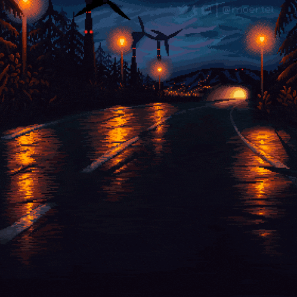

Mistérios da Mansão Esquecida

Você começa a explorar os diferentes cômodos da mansão, cada um com sua
própria atmosfera assustadora e pistas sobre o que está acontecendo. Você
encontra uma biblioteca antiga e um salão de baile decadente. Qual você
deseja desbravar?